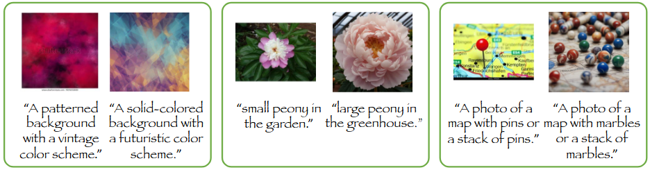
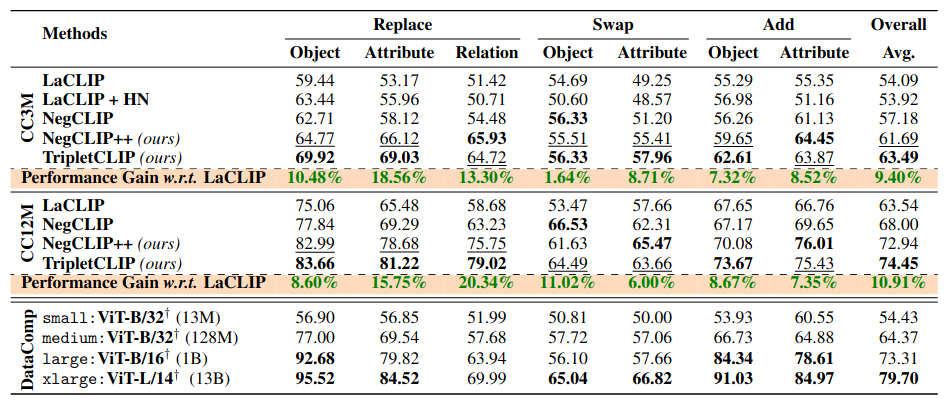
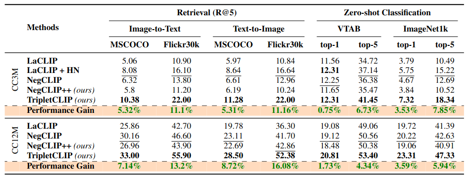
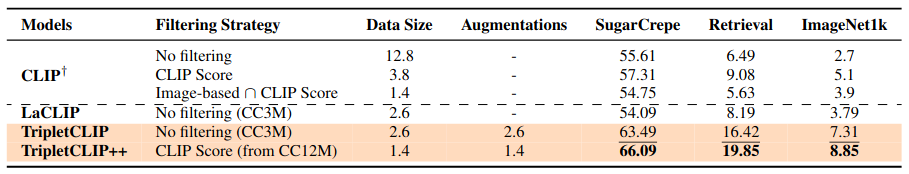
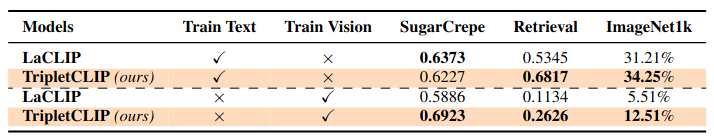

Abstract
Contrastive Language-Image Pretraining (CLIP) models maximize the mutual information between textual and visual modalities to learn representations. However, the lack of compositional diversity in contemporary image-text datasets limits the compositional reasoning ability of CLIP. We show that generating ``hard'' negative captions via in-context learning and synthesizing corresponding negative images with text-to-image generators offers a solution. We introduce a novel contrastive pre-training strategy that leverages these hard negative captions and images in an alternating fashion to train CLIP. We demonstrate that our method, named TripletCLIP, when applied to existing datasets such as CC3M and CC12M, enhances the compositional capabilities of CLIP, resulting in an absolute improvement of over 9% on the SugarCrepe benchmark on an equal computational budget, as well as improvements in zero-shot image classification and image retrieval.
Dataset
We generate a synthetic dataset to counter the lack of compositional diversity in CC3M and CC12M by complimenting the dataset with hard negative captions and corresppnding negative images.
Performance
Composition evaluations of the methods on SugarCrepe benchmark.

Zero-shot image-text retrieval and classification results.

Ablation on filtering high-quality image-text pairs from TripletData.

What's holding back the CLIP models? Ablation w.r.t. frozen modality encoders.
Relevant Projects

ECLIPSE (CVPR'24)
A Resource-Efficient Text-to-Image Prior for Image Generations

WOUAF (CVPR'24)
Weight Modulation for User Attribution and Fingerprinting in T2I Models.